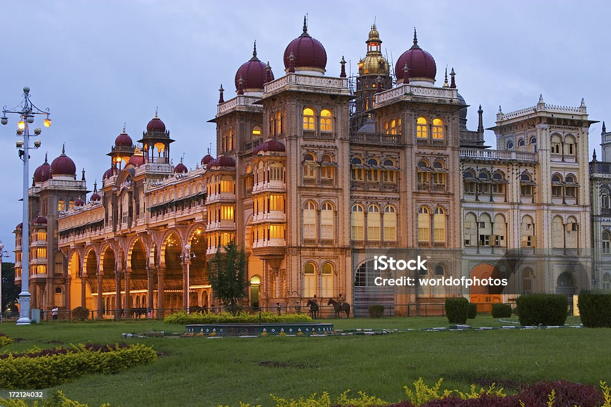

Chennai is my favourite travel destination.With temples, beaches and centres of historical and cultural significance including the UNESCO Heritage Site of Mahabalipuram, Chennai is one of the most-visited cities in India. Chennai has a 19+ km coastline with many beaches including the Marina spanning 13 km (8.1 mi) which is the second-longest urban beach in the world.

Goa is my second favourite travel destination.Over 450 years of Portuguese rule and the influence of the Portuguese culture presents to visitors to Goa a cultural environment that is not found elsewhere in India.Goa has one World Heritage Site: the Bom Jesus Basilica[75] with churches and convents of Old Goa. Most of the beauty of Goa is present on the beaches. The coastline of about 103 km has some of the most attractive beaches flanked by the Arabian Sea.

Mysore has a place after Goa and Chennai.The city receives many tourists during the ten-day Dasara festival.[101] One of the most visited monuments in India, the Amba Vilas Palace, or Mysore Palace, is the centre of the Dasara festivities.[102] The Jaganmohana Palace, The Sand Sculpture Museum the Jayalakshmi Vilas and the Lalitha Mahal are other palaces in the city.[103] Chamundeshwari Temple, atop the Chamundi Hills, and St. Philomena's Church, Wesley's Cathedral, Karanji lake are notable religious places in Mysore.[35]
Kanyakumari is last but not the least.Kanyakumari is a popular tourist destination and pilgrimage centre in India. Notable tourist spots include its unique sunrise and sunset points, the 41-metre (133 ft) Thiruvalluvar Statue, and Vivekananda Rock Memorial off the coast.[4] Lying at the tip of peninsular India, the town is bordered on the west, south, and east by the Laccadive Sea.[5] It has a coastline of 71.5 kilometres (44.4 mi) stretched along these three sides.[6]